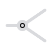
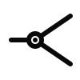

One line splits into two — a rail switch, and the shape of the company: one foundation, two products. The lit node at the fork is the "dawn": the light catching right where the path divides.
"Dawn" carries the accent color, "rail" stays neutral — a quiet nod to the two-part name without spelling it out.